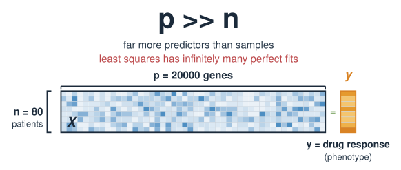
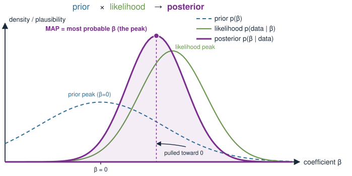
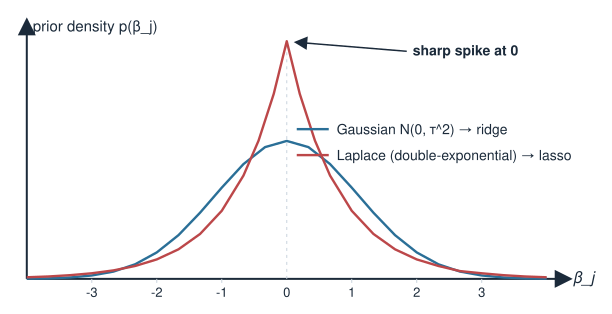
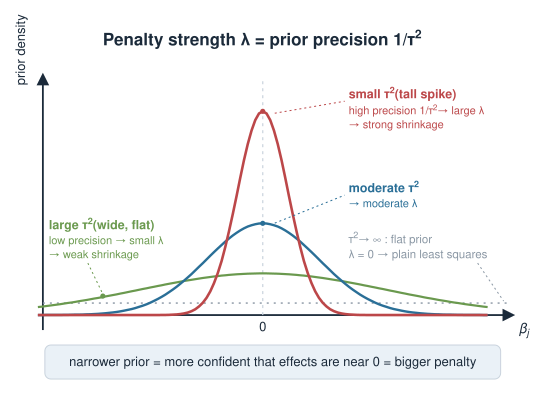
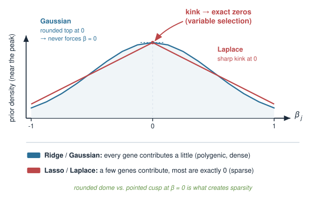
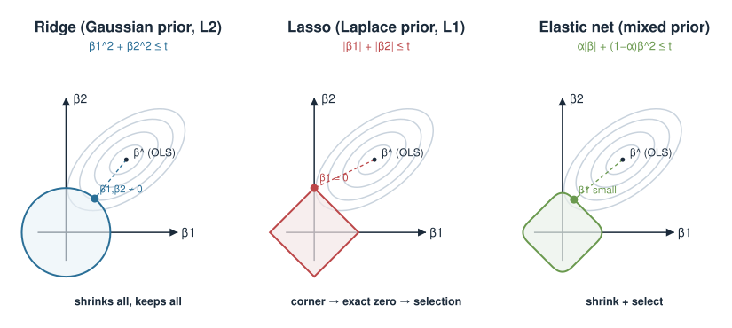
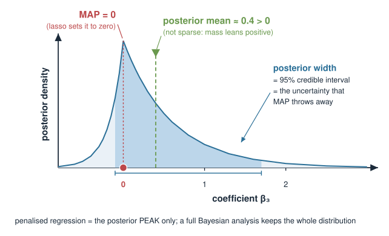
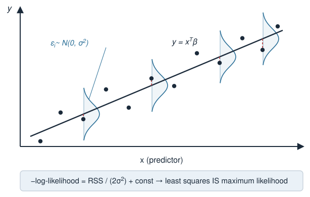

In Ridge and lasso regression we added a penalty to least squares to tame wobbly coefficients. In the Bayesian inference block we learned to combine a prior with a likelihood. Today we show these are the same move seen from two sides.
A penalty on the coefficients is a prior belief about the coefficients.
Minimising penalised loss = finding the most probable coefficients given the data (the MAP estimate).
Ridge ⇔ a Gaussian prior; lasso ⇔ a Laplace (double-exponential) prior.
The penalty strength \lambda encodes how sure you were before seeing data — the prior precision.
This is a concept day: no derivations, one slogan, two demos, and a change of viewpoint that makes both blocks click together.
A biology picture first
You want to predict a phenotype — say drug response — from a gene-expression profile.
You measure 20 000 genes in 80 patients. Far more predictors than samples (p \gg n).
Plain least squares is hopeless here: it has infinitely many perfect fits and memorises noise.
But you know things before you look: most genes are irrelevant to this drug, and the few that matter probably have modest effects, not wild ones.
That prior knowledge is exactly what a penalty quietly injects. Today we make the belief explicit: what does ridge assume about your genes? What does lasso assume?

Recap: the penalised objective
From Ridge and lasso regression, we fit the coefficients \beta by making this as small as possible:
\underbrace{\text{RSS}}_{\text{fit error: how badly the model misses the data}} \;+\; \lambda \times \underbrace{\text{penalty}}_{\text{how big the coefficients are}}
Ridge: penalty = \sum \beta^2 (sum of squares).
Lasso: penalty = \sum |\beta| (sum of absolute values).
\lambda \ge 0 dials the penalty: \lambda = 0 is plain least squares; large \lambda shrinks coefficients hard toward 0.
Recap: Bayes in one line
From Bayesian inference: to learn parameters \boldsymbol\beta from data, combine what you believed before with what the data say.
Likelihood — how well a given \boldsymbol\beta explains the observed data.
Prior — how plausible that \boldsymbol\beta was before seeing any data.
Posterior — the updated belief, combining both.
A quick summary of the posterior is its peak — the single most probable \boldsymbol\beta. That is the MAP estimate (maximum a posteriori), and it is where the bridge to penalties is built.
The bridge: penalty = how unlikely the prior finds \beta
Finding the posterior peak (MAP) means finding the \beta that does well on both counts at once:
Bayesian view
Penalised view
how well \beta explains the data
likelihood
fit error (RSS): small RSS = high likelihood
how plausible \beta was beforehand
prior
penalty: big penalty = the prior finds \beta unlikely
Slogan:the penalty is how unlikely the prior finds \beta. Minimising “RSS + penalty” is climbing to the top of “likelihood × prior”. Same answer, two languages.

Adding a prior on the coefficients
Now put a prior on each coefficient \beta, centred at 0 — encoding “before seeing data, I expect effects to be small, and I have no reason to prefer positive over negative.”
The shape of the prior is the modelling choice. Two natural bell-ish curves centred at 0:
a Gaussian with variance \tau^2 — a rounded top, light-ish tails;
a Laplace (double-exponential) — a sharp spike at 0 with heavier tails.
Each shape, read as “how unlikely is this \beta”, gives a different penalty. That is the whole story.

Ridge = Gaussian prior, lasso = Laplace prior
Prior on each \beta
How unlikely it finds \beta grows like
Penalty
Method
Gaussian, variance \tau^2
\beta^2: a smooth bowl
\sum \beta^2
ridge
Laplace, scale b
\lvert\beta\rvert: a V
\sum \lvert\beta\rvert
lasso
These are identities, not analogies: the ridge estimate is the posterior peak under a Gaussian prior, and the lasso estimate is the posterior peak under a Laplace prior.
The prior’s width sets \lambda: a narrow prior means a big \lambda. For ridge, \lambda = \sigma^2/\tau^2 (noise variance over prior variance).
Penalty strength = prior precision
Read “narrow prior means big \lambda” as a statement about confidence. The precision of the prior is 1/\tau^2 — how tightly it is concentrated at 0.
Prior variance \tau^2
Prior belief
Precision 1/\tau^2
\lambda
Effect
small
“effects are surely tiny”
high
large
strong shrinkage
large
“effects could be anything”
low
small
weak shrinkage
\tau^2 \to \infty
flat / no prior
0
0
plain least squares
So choosing \lambda is choosing how sure you were before the data. A big penalty is not an arbitrary knob — it is a strong, confident prior that the genes have small effects.
lfcShrink in Bulk RNA-seq with DESeq2 is a prior centred at 0 on each fold change: noisy low-count genes are pulled in, well-measured genes barely move.

Why the shape matters: sparsity
The two priors differ most right at \beta = 0:
Gaussian: a rounded top at 0. Near zero its penalty bowl is almost flat, so the pull toward 0 fades away and never finishes the job. Ridge shrinks everything but keeps every \beta \ne 0.
Laplace: a pointed top at 0. Its V-shaped penalty keeps pulling just as hard right up to 0, so weak coefficients land exactly on 0 (variable selection).

So the biological reading is direct:
Ridge / Gaussian prior:“every gene contributes a little” — a polygenic, dense belief.
Lasso / Laplace prior:“a few genes contribute, most contribute nothing” — a sparse belief.
Try it: one coefficient, two priors
Try it: two coefficients, prior × likelihood → posterior peak
Choosing a prior is a biological statement
Because the penalty is a prior, picking a penalty is picking a hypothesis about your system — state it out loud:
Biological belief
Prior
Penalty
Behaviour
“Many genes, each a small effect” (polygenic trait)
Gaussian
ridge (\sum\beta^2)
shrink all, keep all
“A few driver genes, rest irrelevant”
Laplace
lasso (\sum\lvert\beta\rvert)
select a sparse set
“Effects are small and mostly zero”
Gaussian + Laplace mix
elastic net
shrink + select
“I truly know nothing”
flat
none
least squares (fails if p\gg n)
The elastic net (from Ridge and lasso regression) is the MAP under a blend of the two priors — which is why it both shrinks and selects.

A glimpse in R
Nothing new to run — the same glmnet fit you used in Ridge and lasso regression is a MAP estimate under a prior. The point is only to read it that way:
library(glmnet)# X: 80 patients x 20000 genes ; y: drug responsefit <-glmnet(X, y, alpha =0) # alpha = 0 -> ridge (Gaussian prior)fit <-glmnet(X, y, alpha =1) # alpha = 1 -> lasso (Laplace prior)fit <-glmnet(X, y, alpha =0.5) # 0<alpha<1 -> elastic net (mixed prior)# lambda picked by cross-validation = data-driven choice of prior strengthcvfit <-cv.glmnet(X, y, alpha =1)lambda <- cvfit$lambda.min # small lambda = weak prior; large = strong prior
Reading each line as a prior:
alpha selects the prior shape (Gaussian, Laplace, or a blend).
lambda sets the prior precision — how strongly you assert small effects before the data.
cross-validating lambda = letting the data choose how confident a prior to hold.
Caveat: MAP is only the peak
The equivalence is exact, but it identifies penalised regression with the peak of the posterior — not the whole thing.
A full Bayesian analysis reports the entire posterior: the peak and its width (uncertainty), so you get credible intervals on each \beta. MAP throws the width away.
The prior “variance” \tau^2 (or scale b) is usually not known in advance. Cross-validating \lambda is a practical stand-in for a fully Bayesian treatment of that unknown.
(Optional subtlety) Under the Laplace prior, the peak has exact zeros but the posterior average does not: “lasso = Bayesian sparsity” holds for the peak only.
The bridge is genuine and useful, but “penalised regression is secretly Bayesian” is a statement about the MAP point, with the honesty a real Bayesian analysis adds on top.

Optional: the maths behind penalty = prior
Optional: the maths
Logs turn the product into a sum. The logarithm is increasing, so it does not move the peak; -\log turns maximise into minimise: \arg\max_{\beta}\ p(\beta\mid\text{data}) = \arg\min_{\beta}\ \big[-\log p(\text{data}\mid\beta) \;-\; \log p(\beta)\big].
Fit term. With Gaussian noise of variance \sigma^2, -\log p(\text{data}\mid\beta) = \text{RSS}/2\sigma^2 + \text{const}.
Exchange rate. Multiply the whole objective by 2\sigma^2 (this does not move the minimum): \text{RSS} + \tfrac{\sigma^2}{\tau^2}\sum_j\beta_j^2 is ridge with \lambda = \sigma^2/\tau^2; \text{RSS} + \tfrac{2\sigma^2}{b}\sum_j|\beta_j| is lasso with \lambda = 2\sigma^2/b.

Summary
Penalised view
Bayesian view
minimise RSS + penalty
maximise posterior (find the MAP)
fit error (RSS)
the likelihood: small RSS = data likely (Gaussian noise)
penalty
how unlikely the prior finds \beta
ridge, \sum\beta^2
Gaussian prior
lasso, \sum\lvert\beta\rvert
Laplace prior
penalty strength \lambda
prior precision: narrow prior = big \lambda
large \lambda
tight, confident prior at 0
lasso’s exact zeros
Laplace’s pointed top at 0 (sparse belief)
Take-home: a penalty is a prior in disguise. Choosing ridge vs lasso is choosing a biological hypothesis — polygenic vs sparse — and \lambda is how strongly you hold it. Related: the penalties themselves in Ridge, lasso & elastic net; full posteriors in Fitting equations (regression). Next (week 5):Beyond linear models.